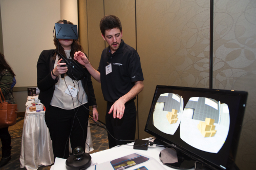
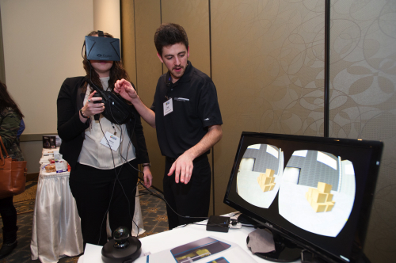

ProVantage strives to provide turn-key solutions that incorporate efficient, safe, improvements into your everyday manufacturing requirements. Solutions by ProVantage are offered within areas of Mechanical Design, Automation Controls, and Data Acquisition. These solution areas are all integratable with one another providing a wide variety of custom solution options for you. ProV strives to provide thorough detailed quotes to answer your concerns and questions in regards to exactly what the best solution for you would be and how we will provide it for you. Throughout the process, ProV’s services are with you every step of the way, from quotation to support, ProVantage utilizes all areas of its service capabilities to bring you an industry leading solution.
We offer a strong set of controls & integration services, mechanical design and data acquisition methods. If you are interested in automating an existing task, or adding new capabilities to your production line, we have a solution to fit your needs.
ProVantage Automation offers guaranteed support for all of our projects, so you can trust us to be there when you need us. We also offer a full range of consultation services to help make your processes more efficient and reliable.

ProVantage Automation's core team has extensive experience designing intelligent automated manufacturing systems. We are industry leaders in integrating PLCs, motion control, HMIs and supervisory control systems. Investing in up-to-date automation technologies is a prudent way to expand your capabilities and save money in the long run.
● All Allen Bradley brand controllers
● Allen-Bradley Guardlogix Safety Processors
● Schneider Electric, Telemechanique & Modicon
● Siemens S7 & S5
● Panasonic
● Pilz Safety Processors

ProVantage Automation has experienced mechanical designers on staff that have developed countless custom and specific mechanical assemblies and retrofits to solve problems countless customers have encountered in their processes. We strive to provide our customers with effective, efficient, and safe solutions that are best suited for them and their operations.
● Collators
● Stackers
● Packing Systems
● Lane Dividers & Balancers
● Pleaters
● Dynamically Adjustable Cooling Systems
● Robot End of Arm Tooling
ProVantage offers control options for our customers, giving them access to their operations from a supervisory perspective. We implement and provide controls that monitor, record and produce reports that outline performance, highlight concerns, and provide the reports you need to ensure you are meeting the maximum efficiency potential of your operations.


ProVantage was commissioned by a high tier packaging company to assess, evaluate, and improve their current packaging machinery and bring it up to today’s standards.
The existing machinery’s legacy controls and hardware were found to be causing a bottleneck in the facilities operating capabilities. Despite the machines good condition it appeared the only solution would be too replace it with a newer, more recent model.
ProVantage was able to remedy this situation by assessing the limitations of the machine, highlighting the areas of retrofit possible, as well as where controls upgrades could be applied while retaining pre-existing components to reduce cost of the project. Effective analysis by ProVantage allowed for appropriate legacy controls to be applied, making use of existing legacy controls and I/O and upgrading it to standard industry controllers without compromising the operability. This was further continued by the upgrading of both the panel and VFD’s to further improve the machines operational capability.
As a result of this, what was the original plan to be a complete replacement, became a more efficient retrofit upgrade utilizing current components available at a fraction of the cost of the originally proposed machine replacement.
Are you interested in how ProVantage can provide service success like this in your plant or operation? Call us to talk with our Automation, Mechanical and SCADA specialists at (905)-648-9800 so that we can best help you reach your facilities maximum potential.
ProVantage Automation was a featured exhibitor at the recent Top 50 Packaging Technologies, with Brad, Jesse and Rob demonstrating ProV’s suite of automation solutions to Ontario’s packaging elite. A real hit for the guests was the Virtual Reality Lab that ProV uses for the development and validation of some of its advanced machines.
The VR Lab allows ProV designers and engineers to look inside at all mechanical assemblies for conflicts in full scale. It also allows end users to see the machine ‘walk through’ to fully understand the design advantages of the new PHC VantageCaser, due to roll out soon.
The VR Lab is a useful tool that is an adjunct to ProV’s engineering designs and further reduces the development time of new mechanical designs. As a validation tool, the VR Lab can help users ensure the quality of design by walking through and beside everything from complex building layouts to process piping installations to anticipating ergonomic anomalies. Want to see inside a control cabinet ... easy; like to see the machine in a different color? Done; wish to validate the utility runs through a building? You can walk right beside them. Check to make sure the energy conduits are separated properly, before they are built? Do it at your desk.
The VR Lab is just another innovative tool that ProV uses to make End Users more productive and respond to increasing market demands. You are invited to drop into the Ancaster Automation Center to experience this novel tool for solving complex issues.
 

102-1349 Sandhill Dr - Ancaster ON, Canada - L9G 4V5
(905) 648-9800